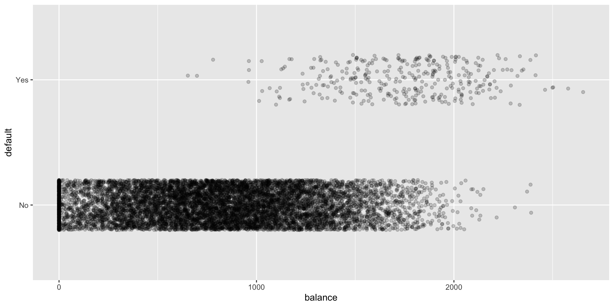

We provide here some intuitions leading to the Logistic Regression model using a simulated data set from James et al. (2021) (the Default data set).
Code
# Default data set (simulated) from ESLII/ISLRdefault_data <- ISLR2::Default %>%as_tibble()glimpse(default_data)
Rows: 10,000
Columns: 4
$ default <fct> No, No, No, No, No, No, No, No, No, No, No, No, No, No, No, No…
$ student <fct> No, Yes, No, No, No, Yes, No, Yes, No, No, Yes, Yes, No, No, N…
$ balance <dbl> 729.5265, 817.1804, 1073.5492, 529.2506, 785.6559, 919.5885, 8…
$ income <dbl> 44361.625, 12106.135, 31767.139, 35704.494, 38463.496, 7491.55…
This is a toy data set used for teaching purposes containing information on ten thousand customers.
The aim here is to assess which customers will default on their credit card debt (the target or response variable) based on the current credit card balance and other individual characteristics (the predictors or feature vector).
The Logistic Regression model
Informal introductory example
We can start to explore the Default data with a scatterplot (Figure 1) of the target variable (default) with respect to a predictor (balance):
Figure 1: Scatterplot of variable default with respect to credit card balance for 10000 customers
The Logistic Regression model
Informal introductory example
In this scatterplot, all points fall on one of two parallel lines representing the absence (No) or occurrence (Yes) of default. We “jitter” the data vertically to avoid overplotting. The plot below shows that the response variable is imbalanced towards the absence of default:

The Logistic Regression model
Informal introductory example
We also show the boxplots of credit cards balance with respect to default status:
Figure 2: Variable balance with respect to default status
We can see from Figure 1 and Figure 2 that default tends to be more prevalent for accounts with a high balance. However it is difficult to guess a simple relationship between default and balance.
The Logistic Regression model
Informal introductory example
To investigate further we discretise the balance variables by classes of width \(300\$\) and compute the mean of response variable (default is Yes) within each balance class:
Then we plot the mean of default (in red) within each balance class (of width \(300\$\)):
Figure 3: Mean occurrence of default within balance classes
The relationship between the mean occurrence of default and balance is easier to read.
Figure 3 clearly shows that as balance increases, the proportion of customers defaulting on their credit card increases.
The Logistic Regression model
Informal introductory example
We also notice that the mean default occurrence with respect to balance classes follows a kind of “S”-shaped curve or sigmoid function. Going further and informally, considering that the mean of default occurrence is an estimate of \(\mathbf{E}[Y|X=x]\) for each balance classes an idea would be to model:
\[
\mathbb{E}[Y|X=x] = \mu_\beta(x)
\]
where \(\mu_\beta\) is a sigmoid function in \([0,1]\).
The Logistic Regression model
Informal introductory example
The Logistic Regression model uses the sigmoid function \(\sigma: x \to\sigma(x)=\frac{e^{x}} { 1 + e^{x} }\) also known as the logistic function. Below a simple transform of this logistic function has been “fitted” (blue dots) to the default ~ balance data set:
The Logistic Regression model
A more formal definition - the discriminative approach
Reminding the statistical learning / scoring concepts introduced before. We try to predict the output default (\(Y \in \{0,1\}\)) using a training set of inputs \(X\): this is a binary classification problem.
We remind that to estimate an optimal classifier for output \(Y \in \{0,1\}\) using input \(X = (X_1,\cdots,X_p)\) one approach was to:
model the conditional distribution \(Y|X\) (the discriminative approach),
for some parameter \(\beta=(\beta_1,\cdots,\beta_p)\in \mathbb R^p\), usually \(x_1=1\) and \(\beta_1\) is an intercept. \(\sigma\) is the sigmoid logistic function we have seen before.
In the literature is usual to denote \(\eta(X)=p_{\beta}(X)\) or \(\eta(X)=\pi_{\beta}(X)\).
From now, we will use the notation \(p_{\beta}(X)\).
The Logistic Regression model
A more formal definition
Defining \(\mathrm{logit}: x \to \log\bigg( \frac{x}{1-x}\bigg)\), which is the inverse of \(\sigma\) the logistic function (show it as an exercise), we have:
\[
\mathrm{logit}(p_{\beta}(X))=X^T\beta
\]
The Logistic Regression model:
We are given \((x_i, y_i) \in \mathbb R^p \times \{0,1\}\), \(i=1,\cdots,n\)
The Logistic Regression model assumes that outputs \(y_i\) are independent Bernoulli with parameter \(p_{\beta}(x_i)\) depending on \(x_i\):
\[
\mathrm{logit}(p_{\beta}(x_i))=x_i^T\beta
\]
The Logistic Regression model
How to fit with R
The syntax to fit the Logistic model in R using glm() is:
The formula \(\mathrm{y} \sim \mathrm{x}\) depicts the model (i.e. inputs are \(X\), output is \(Y\)) and the data= argument points to the training set contained in a R dataframe (or tibble). This is quite similar to the lm() function.
We also need to specify the distribution for the conditional \(Y\) values (binomial) and the link function (logit) via the family= argument.
The Logistic Regression model
How to fit with R
For our default example:
The command summary produces result summaries of the fitted model:
Call:
glm(formula = default ~ ., family = "binomial", data = default_data)
Coefficients:
Estimate Std. Error z value Pr(>|z|)
(Intercept) -1.087e+01 4.923e-01 -22.080 < 2e-16 ***
studentYes -6.468e-01 2.363e-01 -2.738 0.00619 **
balance 5.737e-03 2.319e-04 24.738 < 2e-16 ***
income 3.033e-06 8.203e-06 0.370 0.71152
---
Signif. codes: 0 '***' 0.001 '**' 0.01 '*' 0.05 '.' 0.1 ' ' 1
(Dispersion parameter for binomial family taken to be 1)
Null deviance: 2920.6 on 9999 degrees of freedom
Residual deviance: 1571.5 on 9996 degrees of freedom
AIC: 1579.5
Number of Fisher Scoring iterations: 8
We will see in the next lesson, how this model is fitted in practice and how to interpret or understand what is printed by the summary function.
The Logistic Regression model
Estimation
We are given \((x_i, y_i) \in \mathbb R^p \times \{0,1\}\), \(i=1,\cdots,n\) where outputs \(y_i\) are independent Bernoulli with parameter \(p_{\beta}(x_i)\) depending on \(x_i\):
\[
\mathrm{logit}(p_{\beta}(x_i))=x_i^T\beta
\]
The parameters \(\beta\) of the Logistic Regression model are usually determined using Maximum Likelihood Estimation (MLE). It consists on finding \(\beta\) for which the joint probability of the observed data is greatest.
As \(y_i\) are independent the likelihood function (joint probability) is the product of the probability mass functions:
Solving this equation involves solving \(p\) non-linear equations in \(\beta=(\beta_1,\cdots,\beta_p)\):
\[
y_1 x_{1j} + \cdots + y_n x_{nj} = x_{1j}\frac{\exp(x_1^T\beta)}{1+\exp(x_1^T\beta)}+ \cdots + x_{nj}\frac{\exp(x_n^T\beta)}{1+\exp(x_n^T\beta)},\quad j=1,\cdots,p
\] Numerical methods are used to solve these non-linear equations as no closed-form solution exist.
The Logistic Regression model
Estimation - MLE existence
If we assume that \(rank(X)=p\), we have that \(S(\beta)\) is concave in \(\beta\) hence if we find a local maximum it is a global maximum.
Using Taylor expansion of Score \(S(\beta)\) around an initial guess \(\beta^{(0)}\) of \(\hat\beta\): \[
S(\hat\beta) \approx S(\beta^{(0)})+H(\beta^{(0)})(\hat\beta-\beta^{(0)})
\] giving a first estimate of \(\hat\beta\): \[
\beta^{(1)} = \beta^{(0)} - H^{-1}(\beta^{(0)})S(\beta^{(0)})
\] Then until convergence, the Newton-Raphson method iterates:
We show below a naive implementation of Newton-Raphson method to estimate \(\beta\):
Code
# We put the data frame in matrix form# also adding an interceptX <-cbind(rep(1, nrow(default_data)),as.matrix(default_data %>%select(balance, income))) colnames(X) <-c("(Intercept)", "balance", "income")n <-nrow(X)# We extract the output as vectorY <- default_data %>%mutate(default =if_else(default=='Yes', 1, 0)) %>%pull(default)# We set an initial guess for beta and criterion for stoppingbeta <-c(0.01, 0.0, 0.0)nb_iter <-25tol <-1e-4lr_solve <-function(X, Y, beta, nb_iter, tol){for(i in1:nb_iter){# first compute p_beta(X) p_beta <-exp(X %*% beta) / (1+exp(X %*% beta))# then the Score Score_beta <-t(X) %*% (Y-p_beta)# and the Hessian W_beta <-matrix(0, n, n)diag(W_beta) <- p_beta*(1-p_beta) Hessian_beta <--t(X) %*% W_beta %*% X# we update beta new_beta <- beta -solve(Hessian_beta) %*% Score_beta# we check for convergenceif(t(beta-new_beta) %*% (beta-new_beta) < tol){return(list(beta = beta, hessian = Hessian_beta, nb_iter = i)) } beta <- new_beta }return(list(beta = beta, hessian = Hessian_beta, nb_iter = i)) }sol <-lr_solve(X, Y, beta, nb_iter, tol)
The Logistic Regression model
Estimation - The Newton-Raphson method
We verify that the R glm() function and our algorithm give close values for coefficients \(\beta\):
R glm():
(Intercept) balance income
-11.540468 0.005647 0.000021
Newton-Raphson:
(Intercept) balance income
[1,] -11.53791 0.005646 2.1e-05
The Logistic Regression model
Estimation - Machine Learning approach
We rewrite the log-likelihood equation stated before:
and \(\hat{\mathrm{R}}(p_\beta)\) is the empirical risk on the training set.
Estimating \(\beta\) by maximizing the log-likelihood is equivalent to minimizing with respect to \(\beta\) the empirical risk of \(p_\beta\) for the logistic loss.
The Logistic Regression model
Interpretation - the R glm() output
Code
summary(glm_default)
Call:
glm(formula = default ~ ., family = "binomial", data = default_data)
Coefficients:
Estimate Std. Error z value Pr(>|z|)
(Intercept) -1.087e+01 4.923e-01 -22.080 < 2e-16 ***
studentYes -6.468e-01 2.363e-01 -2.738 0.00619 **
balance 5.737e-03 2.319e-04 24.738 < 2e-16 ***
income 3.033e-06 8.203e-06 0.370 0.71152
---
Signif. codes: 0 '***' 0.001 '**' 0.01 '*' 0.05 '.' 0.1 ' ' 1
(Dispersion parameter for binomial family taken to be 1)
Null deviance: 2920.6 on 9999 degrees of freedom
Residual deviance: 1571.5 on 9996 degrees of freedom
AIC: 1579.5
Number of Fisher Scoring iterations: 8
Based on this output, the fitted model is (we have re-scaled balance and income for better readability):
To set these ideas, for a variable \(x\) in \([-5,5]\), we plot the logistic curve (i.e. the probabilities) together with the odds and the logits (ie log(odds)):
The Logistic Regression model
Interpretation - odds ratio
For two observations \(x\) and \(\tilde{x}\) we define odds ratio as:
\[
OR(x,\tilde{x})=\frac{odds(x)}{odds(\tilde{x})}
\] Odds ratio are used to compare probabilities between two observations:
\(exp(\beta_j)\) is the odds ratio associated with a one-unit increase in the \(x_j\).
Tip
Interpret the coefficients in terms of odds:
The coefficient of balance / 1000 is 5.737. Hence an increase of balance by 1000 points increases odds for default by a factor of exp(5.737)=310.
The coefficient of income / 10000 is 0.03. Hence an increase of income by 10000 points increases odds for default by a factor of exp(0.03)=1.03.
The coefficient of “being a student” is -0.647. Hence being a student decreases odds for default by a factor of exp(-0.647)=0.52.
More on odds ratio interpretation can be found here.
The Logistic Regression model
Inference - asymptotic properties of MLE
Under certain assumptions (see for example Gourieroux & Monfort (1981) or Fahrmeir & Kaufmann (1986)), the Maximum Likelihood Estimator has the following asymptotic properties:
As \(\mathcal I(\beta)\) is unknown we use instead \(\mathcal I(\hat\beta)=\frac{1}{n}X^T W_\hat\beta X\). Since \(\hat\beta \xrightarrow[] {p} \beta\) and \(p_\beta\) continuous in \(\beta\) it can be shown that:
Using the preceding asymptotic properties we can derive confidence interval and tests for the coefficients \(\beta_j\), \(j =1,\cdots,p\) of the model:
\[
\frac{\hat\beta_j-\beta_j}{\hat \sigma_j} \xrightarrow[]{\mathcal L} \mathcal N(0,1)
\] where \(\hat \sigma_j^2= s.e.(\hat\beta_j)^2\) denotes the \(j-th\) term of \(( X^T W_{\hat\beta} X )^{-1}\) diagonal.
The typical formula for a \(1-\alpha\) confidence interval is:
\[
\hat\beta_j \pm z_{1-\alpha/2} \hat \sigma_j
\] where \(z_{1-\alpha/2}\) is the \((1-\alpha/2)\) quantile of the standard normal distribution.
The Logistic Regression model
Inference - Wald statistics
Going further, the asymptotic properties of MLE also allow to test the “statistical significance” of each coefficient in the model, the Wald test.
Denoting: \(\textrm{H}_0\textrm{: } \beta_j=0\) and \(\textrm{H}_1\textrm{: } \beta_j \neq 0\) we have under \(\textrm{H}_0\):
\[
\frac{\hat\beta_j}{\hat \sigma_j} \xrightarrow[]{\mathcal L} \mathcal N(0,1)
\] We will reject \(\textrm{H}_0\) at level \(\alpha\) if the absolute of the observed value \(\frac{\hat\beta_j}{\hat \sigma_j}\) (denoted in glm output as z value) is above the \((1-\alpha/2)\) quantile of the standard normal distribution.
Call:
glm(formula = default ~ balance + income, family = "binomial",
data = default_data)
Coefficients:
Estimate Std. Error z value Pr(>|z|)
(Intercept) -1.154e+01 4.348e-01 -26.545 < 2e-16 ***
balance 5.647e-03 2.274e-04 24.836 < 2e-16 ***
income 2.081e-05 4.985e-06 4.174 2.99e-05 ***
---
Signif. codes: 0 '***' 0.001 '**' 0.01 '*' 0.05 '.' 0.1 ' ' 1
(Dispersion parameter for binomial family taken to be 1)
Null deviance: 2920.6 on 9999 degrees of freedom
Residual deviance: 1579.0 on 9997 degrees of freedom
AIC: 1585
Number of Fisher Scoring iterations: 8
The Logistic Regression model
Inference - Wald statistics
We reject \(\textrm{H}_0\) at level \(\alpha\) when \(p = \mathbf P(|z|>|\frac{\hat\beta_j}{\hat \sigma_j}|)<\alpha\).
\(p\) is called the p-value.
The output of glm in R shows:
\(\hat\beta_j\) as Estimate,
\(\hat \sigma_j\) as Std. Error,
the observed test statistic \(\frac{\hat\beta_j}{\hat \sigma_j}\) as z value,
and the p-value as Pr(>|z|)
The Logistic Regression model
Inference - Wald statistics
We obtain the z value\(\frac{\hat\beta_j}{\hat \sigma_j}\) using estimate and its standard deviation:
Code
z <- glm_bal_inc$coefficients[3] / (summary(glm_bal_inc))$coefficients[3,2]z
income
4.174178
and then the p-value:
Code
(1-pnorm(abs(z)))*2
income
2.990638e-05
The Logistic Regression model
Inference - Wald statistics
Using the hessian matrix obtained before as a side product of the Newton-Raphson algorithm, we retrieve comparable values with glm outputs for \(\hat \sigma_j\):
More details on profile likelihood method can be found here.
The Logistic Regression model
Inference - tests on model coefficients
Based on the same idea, it is possible to test for the nullity of a subset of the model coefficients.
Denoting: \(\textrm{H}_0\textrm{: } \beta_1=\cdots=\beta_q=0\), \(\textrm{H}_1\textrm{: } \exists j \in \{1,\cdots,q \} \textrm{ }|\textrm{ }\beta_j \neq 0\), \(\hat\beta=(\hat\beta_1,\cdots,\hat\beta_p)\) the MLE and \(\hat\beta_{1:q}=(\hat\beta_1,\cdots,\hat\beta_q)\) the vector of first \(q\) parameters.
We have under \(\textrm{H}_0\):
\[
\hat\beta_{1:q}^T( X^T W_{\hat\beta} X )^{-1}_{1:q}\hat\beta_{1:q} \xrightarrow[]{\mathcal L} \chi_q^2
\] where \((X^T W_{\hat\beta} X )^{-1}_{1:q}\) is the \(q \times q\) upper left block matrix extracted from the inverse of hessian.
We will reject \(\textrm{H}_0\) at level \(\alpha\) if the observed value \(\hat\beta_{1:q}^T( X^T W_{\hat\beta} X )^{-1}_{1:q}\hat\beta_{1:q}\) is above the \(1-\alpha\) quantile of the \(\chi_q^2\) distribution.
The Logistic Regression model
Inference - tests on model coefficients
We show below the Wald tests for each coefficient in the model using summary:
Code
summary(glm_default)
Call:
glm(formula = default ~ ., family = "binomial", data = default_data)
Coefficients:
Estimate Std. Error z value Pr(>|z|)
(Intercept) -1.087e+01 4.923e-01 -22.080 < 2e-16 ***
studentYes -6.468e-01 2.363e-01 -2.738 0.00619 **
balance 5.737e-03 2.319e-04 24.738 < 2e-16 ***
income 3.033e-06 8.203e-06 0.370 0.71152
---
Signif. codes: 0 '***' 0.001 '**' 0.01 '*' 0.05 '.' 0.1 ' ' 1
(Dispersion parameter for binomial family taken to be 1)
Null deviance: 2920.6 on 9999 degrees of freedom
Residual deviance: 1571.5 on 9996 degrees of freedom
AIC: 1579.5
Number of Fisher Scoring iterations: 8
The Logistic Regression model
Inference - tests on model coefficients
These tests can be also performed in R using car::Anova or aod::wald.test routines. In particular when categorical variables have more than two levels these functions allow to test each variables as a whole (vs coefficient by coefficient when using summary)
The null hypothesis is rejected for the model with balance and student.
The Logistic Regression model
Likelihood ratio tests
It is possible to test for the nullity of a subset of the model coefficients using Likelihood Ratio statistics.
Denoting: \(\textrm{H}_0\textrm{: } \beta_1=\cdots=\beta_q=0\), \(\textrm{H}_1\textrm{: } \exists j \in \{1,\cdots,q \} \textrm{ }|\textrm{ }\beta_j \neq 0\), and \(\hat\beta=(\hat\beta_1,\cdots,\hat\beta_p)\) the MLE, we have under \(\textrm{H}_0\):
\[
-2\left(\ell_{\textrm{H}_0}(Y,\hat\beta_{\textrm{H}_0})-\ell(Y,\hat\beta)\right)\xrightarrow[]{\mathcal L} \chi_q^2
\] where \(\ell_{\textrm{H}_0}(Y,\hat\beta_{\textrm{H}_0})\) is the log-likelihood of:
Consider two models, a larger model with \(l\) parameters and likelihood \(L_L\) and a smaller model with \(s\) parameters and likelihood \(L_S\), where the smaller model represents a subset of the larger model. Typically the smaller model is equivalent to the large model where we have imposed:
\[
\textrm{H}_0\textrm{: } \ \beta_j = \ldots = \beta_{j+r} = 0
\] Likelihood Ratio tests on variables may be performed in R using car::Anova:
Using base Ranova it is also possible to test subsets of variables and in particular individual variables within the “full” model, we have to fit glm for each sub model:
Analysis of Deviance Table
Model 1: default ~ student + income
Model 2: default ~ student + balance + income
Resid. Df Resid. Dev Df Deviance Pr(>Chi)
1 9997 2907.5
2 9996 1571.5 1 1336 < 2.2e-16 ***
---
Signif. codes: 0 '***' 0.001 '**' 0.01 '*' 0.05 '.' 0.1 ' ' 1
Code
anova(glm_wo_income, glm_default, test ="LRT")
Analysis of Deviance Table
Model 1: default ~ student + balance
Model 2: default ~ student + balance + income
Resid. Df Resid. Dev Df Deviance Pr(>Chi)
1 9997 1571.7
2 9996 1571.5 1 0.13677 0.7115
The deviance defined as \(D=-2 \ell\) is often reported by statistical software in place of log-likelihood. A large likelihood corresponding to a small deviance.
The Logistic Regression model
Likelihood ratio tests
A better and full coverage of tests in the context of Logistic Regression can be found here or in (Hosmer et al., 2013). See also here for a data analysis using R and see the question here for a very detailed description of the outputs of glm() (in particular this answer).
The Logistic Regression model
Goodness of Fit test / Calibration
Although it is generally not recommended by practitioners and theoreticians, the Hosmer & Lemeshow test (see here, here or here) allows to quickly assess the “goodness of fit” of a Logistic Regression.
But more than the test in itself, the underlying motivation is interesting: the Logistic Regression model provides an estimate of the probability of an outcome (success/failure, here the default is success or 1). The estimated probability of this outcome should be close to the true observed probability.
The Hosmer & Lemeshow test assess if observed event rates match expected event rates in subgroups of “similar” observations. Models for which expected and observed event rates agree on these subgroups are considered well calibrated.
The Logistic Regression model
Goodness of Fit test / Calibration
A first step of the test is to order the predicted probabilities of the outcome and divide it into Q groups (usually using deciles, Q=10). Then the average predicted probability for each group is computed and compared to the observed probability.
The Hosmer & Lemeshow test statistic \(H\) is compared to a \(\chi_{Q-2}^2\) distribution:
Here the p-value for a chi-squared statistic of \(H=3.68\) with \(df=Q-2=8\) is \(p=0.885\) which is well above the usual levels (eg \(0.05\)), so that the null hypothesis is accepted, goodness of fit is acceptable.
However the Hosmer & Lemeshow test is dependent on the choice of Q and the binning performed on probabilities and is sometimes considered unreliable.
The Logistic Regression model
Goodness of Fit test / Calibration
Nonetheless it is usual to assess or diagnose the good calibration of a model probabilities using Calibration Plots or Probability Calibration Curves (see here for a recent R package from the tidyverse/tidymodel ecosystem and here for a scikit-learn version): they are used to visualize if predictions are consistent with the observed event rates (be it on the training set or a testing set, which is better).
The Logistic Regression model
Goodness of Fit test / Calibration
For example considering the default data set we have:
The model tends to slightly overestimate/underestimates some deciles without a clear pattern.
References
Albert, A., & Aanderson, J. A. (1984). On the existence of maximum likelihood estimates in logistic regression models. Biometrika, 71(1), 1–10. https://doi.org/10.1093/biomet/71.1.1
Fahrmeir, L., & Kaufmann, H. &. (1986). Asymptotic inference in discrete response models. Statistische Hefte, 27(1), 179–205. https://doi.org/10.1007/bf02932567
Gourieroux, C., & Monfort, A. (1981). Asymptotic properties of the maximum likelihood estimator in dichotomous logit models. Journal of Econometrics, 17(1), 83–97. https://doi.org/10.1016/0304-4076(81)90060-9
Hosmer, D. W., Lemeshow, S., & Sturdivant, R. X. (2013). Applied logistic regression. In Wiley Series in Probability and Statistics.
James, G., Witten, D., Hastie, T., & Tibshirani, R. (2021). An introduction to statistical learning: With applications in r. Springer US. https://doi.org/10.1007/978-1-0716-1418